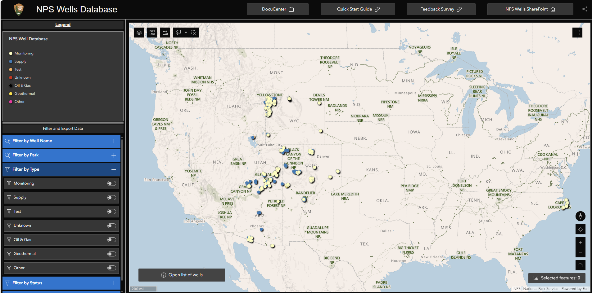
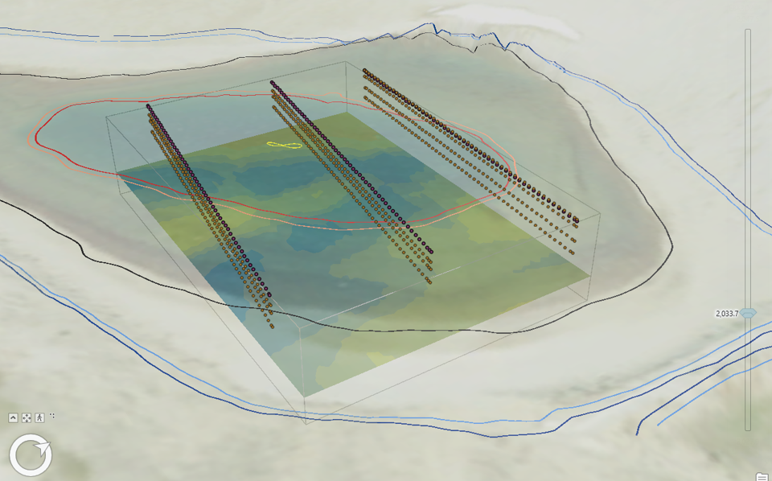
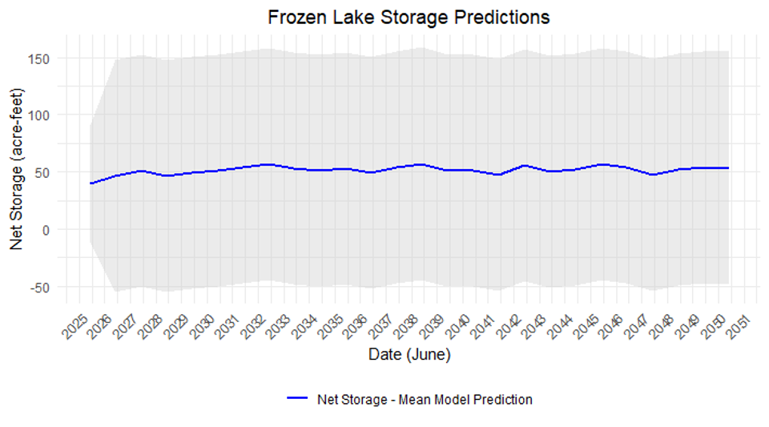
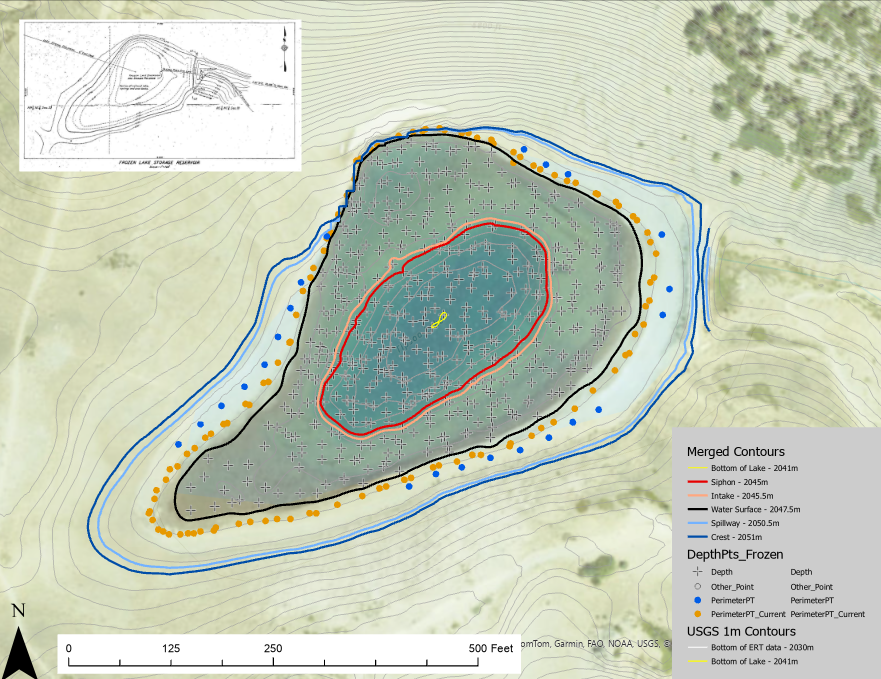
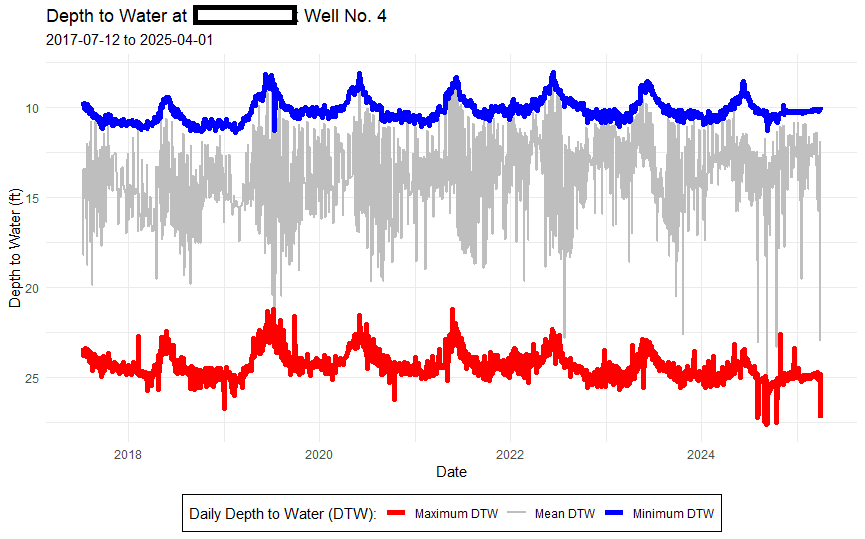
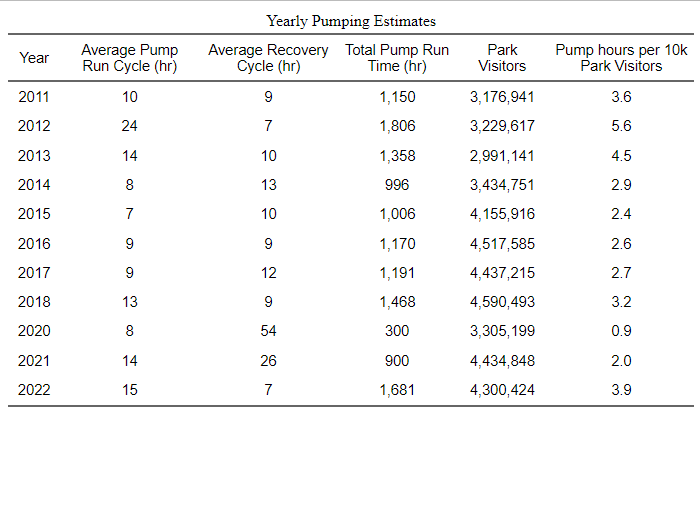
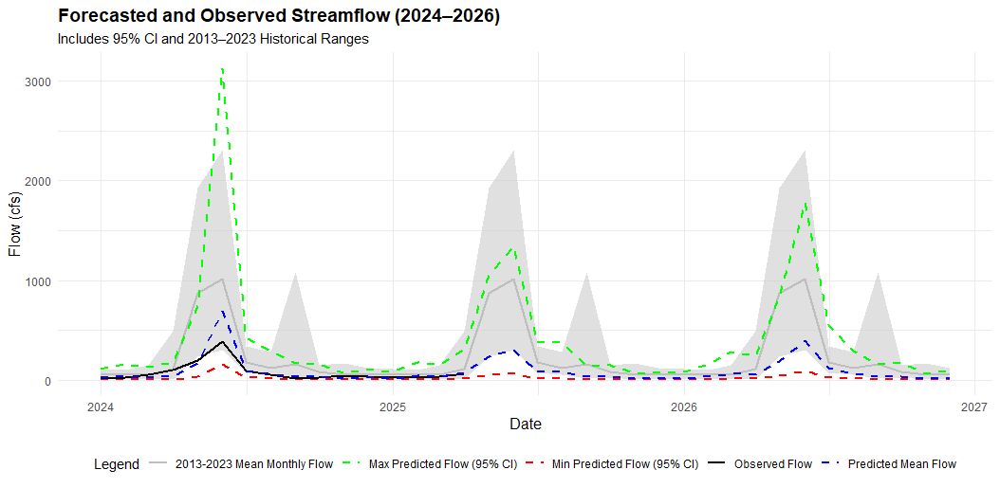
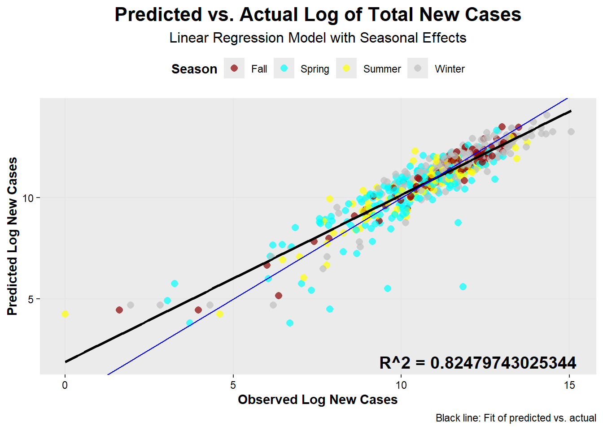
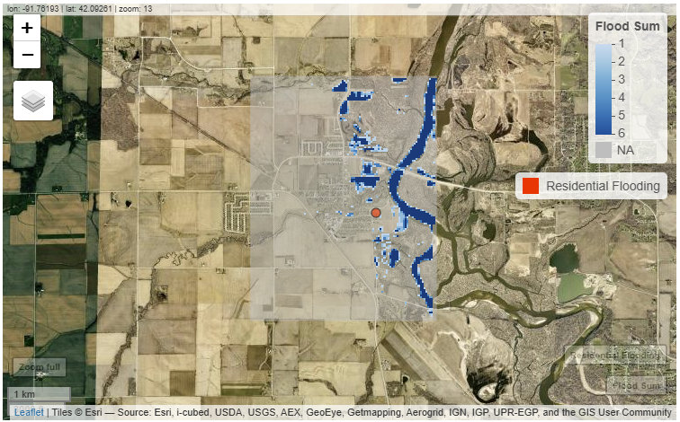
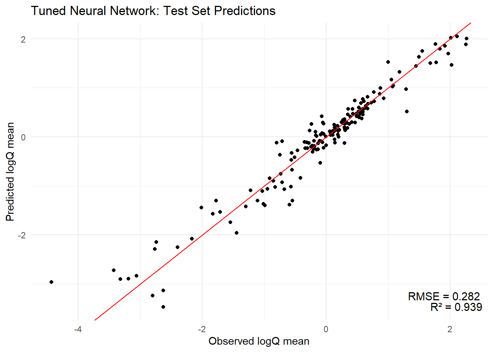

Projects
NPS Projects
Sunrise Visitor Center Water Supply Assessment
As part of a research project at Mount Rainier National Park, I conducted a comprehensive assessment of the water supply system for the Sunrise Visitor Complex, which relies on Frozen Lake and a small 22-acre alpine watershed. My work focused on data-driven analysis of over a decade of water use records, hydrologic and climatic datasets, and historical engineering documents. I developed a remote sensing workflow to remotely monitor future lake levels, constructed a predictive model of seasonal runoff under future climate scenarios, and evaluated alternative groundwater development using geospatial and geophysical data. This project integrated legal, physical, and ecological constraints to produce actionable recommendations, and demonstrated my ability to apply advanced analytical methods to real-world water resource challenges.
 
Well Database Demo
I created this Well Database ShinyApp demo for the National Park Service to showcase a simple option to create a user interface that could host a database for groundwater wells and link those wells to water level measurements in NWIS (if available).
Ultimately it was decided to host the user interface as a custom ArcGIS Experience that I created, to allow for the well database to be incorporated into a number of other NPS AGO Webmaps and Experiences.
Tracking Water Storage in Frozen Lake
As part of the Water Supply investigation at Mount Rainier National Park I combined depth measurements made by park staff with USGS DEM data to create a new storage rating curve for Frozen Lake.

I then took this information and created a function that would download the most recent cloud free landsat imagery, process the imagery to determine the surface area of the lake, and use the surface area to estimate the amount of water currently stored in reservoir. This allows the park to have frequent measurements of storage without the need for additional staff time or equipment.
Water Supply Well Reports
I compiled a number of reports on several water supply wells in use by the National Park Service. This was a large amount of data, as the water levels had been recorded at 15 to 30 minute intervals for more than 10 years. In addition, I needed to estimate water use based on when water levels were drawn down by the pump in each well. This required creating several functions to identify when the water was being drawn down by the pump, when the water level was recovering after the pump was off, and when water level changes were due to changes in the surrounding groundwater.
This plot of daily water level min, mean, and max is an example of the natural water level (represented by the min water level) and water level drawdown during pumping (represented by the max water level). The mean water level roughly visualizes use, but can be misleading at times.

I was also able classify time periods when the pump was running and summarize this data for each year to compare how operations have changed and if the water use is driven by visitation to the park.

CSU Projects
Poudre River Flow Forecast
This project used 11 years (2013 to 2023) of monthly data for flows on the Poudre River at the Canyon mouth as well as precipitation, solar radiation, and max temperature for the contributing watershed to generate six different flow prediction models. The models were then fed MACA climate prediction data to predict flows. Finally, I compared the model predictions to the monthly observed flows between Jan 2024 and May 2025.

These models highlight the variability and difficulty with predicting runoff in human managed streams, as you can clearly see the influence of downstream water deliveries occurring in fall.
COVID-19 Spread and Case Estimates:
For this project I looked at COVID cases and deaths across the country, tracked how they changed over time and space, and created a linear regression model to estimate new cases where data was unavailable.

Remote Sensing based Flood Inundation
This project looked at the flooding event that took place in Palo, Iowa in September of 2016. Using landsat imagery, I developed a classification threshold from a number of indices to identify flooded areas, which were then plotted on an interactive map to compare against some of the known flood areas.

Repeatable Flow Prediction Workflows
For this project I worked with the CAMELS dataset to test a number of attributes to be used as predictors for flow (Q) in a number of different models. The goal was to not only create a successful model (R-squared > 0.9), but to also create a workflow in tidymodels that can evaluate and tune a number of different model types efficiently. For this case, the neural net model was the best pick, but since it was a neural net model it was difficult to identify what attributes had been the most important in model.

Other projects
Irrigation Ditch Companies
While working on the City of Boulder’s water supply team, I held several positions with different Irrigation Ditch Companies that the City had an ownership or interest in. My duties varied, but for several companies I developed websites to provide education and outreach materials, provide shareholders with company information, and host real time data availability data.
City of Boulder Irrigation Ditch Education and Outreach
As part of my role at the City of Boulder, I led Education and Outreach efforts related to water rights, water supply, and Irrigation Ditch operations. To provide information about these complex topics, I developed a number of documents for City Staff and the public.
2013 Flood Recovery on St. Vrain Creek
While working at Boulder County Parks & Open Space I had the opportunity to work on a number of stream restoration, fish passage, and emergency flood recovery projects. This experience shaped my career by allowing me to rapidly gain experience in project management.